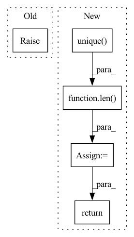

Pattern ID :30806
Before Change
def segment_mean(x, segment_ids):
raise NotImplementedError
def segment_min(x, segment_ids):After Change
def segment_mean(x, segment_ids):
num_segments = len( torch.unique( segment_ids))
return unsorted_segment_mean(x, segment_ids, num_segments)
def segment_min(x, segment_ids):In pattern: SUPERPATTERN
Frequency: 5
Non-data size: 5
Instances Fragment ID: 90734104
Project Name: tensorlayer/tensorlayerx
Commit Name: c65412794b3c56405fd6268ed7314a6e6881912f
Time: 2022-03-10
Author: jiaronghan@outlook.com
File Name: tensorlayerx/backend/ops/torch_backend.py
M Class Name: AnonimousClass
N Class Name: AnonimousClass
M Method Name: segment_mean(2)
N Method Name: segment_mean(2)
M Parent Class:
N Parent Class:
M File Name: tensorlayerx/backend/ops/torch_backend.py
N File Name: tensorlayerx/backend/ops/torch_backend.py
M Start Line: 1349
M End Line: 1349
N Start Line: 1388
N End Line: 1389
Before Change
def segment_max(x, segment_ids):
raise NotImplementedError
def segment_mean(x, segment_ids):After Change
def segment_max(x, segment_ids):
num_segments = len( torch.unique( segment_ids))
return unsorted_segment_max(x, segment_ids, num_segments)
def segment_mean(x, segment_ids): Fragment ID: 90734105
Project Name: tensorlayer/tensorlayerx
Commit Name: c65412794b3c56405fd6268ed7314a6e6881912f
Time: 2022-03-10
Author: jiaronghan@outlook.com
File Name: tensorlayerx/backend/ops/torch_backend.py
M Class Name: AnonimousClass
N Class Name: AnonimousClass
M Method Name: segment_max(2)
N Method Name: segment_max(2)
M Parent Class:
N Parent Class:
M File Name: tensorlayerx/backend/ops/torch_backend.py
N File Name: tensorlayerx/backend/ops/torch_backend.py
M Start Line: 1345
M End Line: 1345
N Start Line: 1382
N End Line: 1383
Before Change
def segment_min(x, segment_ids):
raise NotImplementedError
def segment_prod(x, segment_ids):After Change
def segment_min(x, segment_ids):
num_segments = len( torch.unique( segment_ids))
return unsorted_segment_min(x, segment_ids, num_segments)
def segment_prod(x, segment_ids): Fragment ID: 90734106
Project Name: tensorlayer/tensorlayerx
Commit Name: c65412794b3c56405fd6268ed7314a6e6881912f
Time: 2022-03-10
Author: jiaronghan@outlook.com
File Name: tensorlayerx/backend/ops/torch_backend.py
M Class Name: AnonimousClass
N Class Name: AnonimousClass
M Method Name: segment_min(2)
N Method Name: segment_min(2)
M Parent Class:
N Parent Class:
M File Name: tensorlayerx/backend/ops/torch_backend.py
N File Name: tensorlayerx/backend/ops/torch_backend.py
M Start Line: 1353
M End Line: 1353
N Start Line: 1394
N End Line: 1395
Before Change
elif df is None:
raise ValueError("df is None")
else:
raise ValueError("Please, insert valid df type (pd.DataFrame)")
// list of IDs
id_list = list(new_df.ID.unique())After Change
return df_copy, df_has_id_column, True, ["__df__"]
// Create a list of unique ID values
unique_id_values: list[str] = df_copy["ID"].unique() .tolist()
// Check if there is only one unique ID value
df_has_single_time_series = len( unique_id_values) == 1
single_or_multiple_message = "a single" if df_has_single_time_series else "multiple"
log.debug(f"Provided DataFrame (df) has an ID column and contains {single_or_multiple_message} time series.")
return df_copy, df_has_id_column, df_has_single_time_series, unique_id_values
def return_df_in_original_format(df, received_ID_col=False, received_single_time_series=True): Fragment ID: 90734107
Project Name: ourownstory/neural_prophet
Commit Name: ddcb2d23c702ca2583d530c67b4ba2fe673cedd0
Time: 2023-03-01
Author: noxan@users.noreply.github.com
File Name: neuralprophet/df_utils.py
M Class Name: AnonimousClass
N Class Name: AnonimousClass
M Method Name: prep_or_copy_df(1)
N Method Name: prep_or_copy_df(1)
M Parent Class:
N Parent Class:
M File Name: neuralprophet/df_utils.py
N File Name: neuralprophet/df_utils.py
M Start Line: 25
M End Line: 63
N Start Line: 25
N End Line: 64
Before Change
def segment_sum(x, segment_ids):
raise NotImplementedError
def sigmoid(x):After Change
def segment_sum(x, segment_ids):
num_segments = len( torch.unique( segment_ids))
return unsorted_segment_sum(x, segment_ids, num_segments)
def sigmoid(x): Fragment ID: 90734103
Project Name: tensorlayer/tensorlayerx
Commit Name: c65412794b3c56405fd6268ed7314a6e6881912f
Time: 2022-03-10
Author: jiaronghan@outlook.com
File Name: tensorlayerx/backend/ops/torch_backend.py
M Class Name: AnonimousClass
N Class Name: AnonimousClass
M Method Name: segment_sum(2)
N Method Name: segment_sum(2)
M Parent Class:
N Parent Class:
M File Name: tensorlayerx/backend/ops/torch_backend.py
N File Name: tensorlayerx/backend/ops/torch_backend.py
M Start Line: 1361
M End Line: 1361
N Start Line: 1404
N End Line: 1405